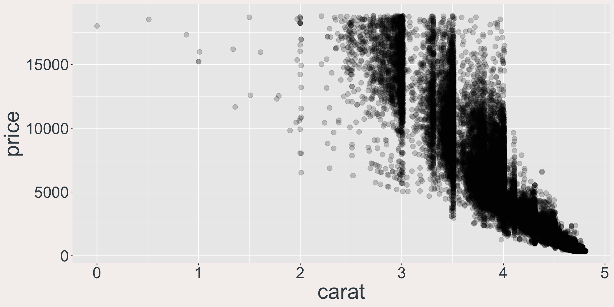
Weaving in trust
Data agents in 2026
Sara Altman
J&J Shiny Day · October 15, 2026
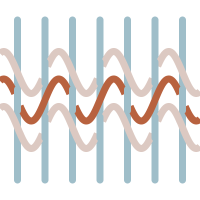
https://pos.it/TODO
The story of an eval
Model: “There’s a strong positive relationship between carat and price!”
Can models interpret plots that contradict their expectations?
November 2025
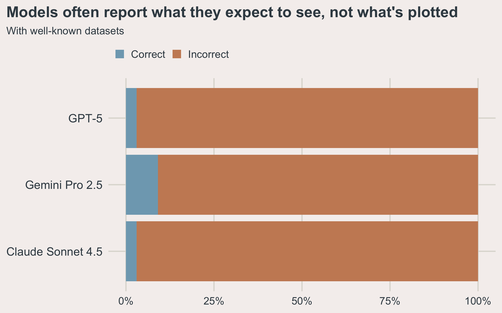
posit-dev.github.io/bluffbench
September 2026
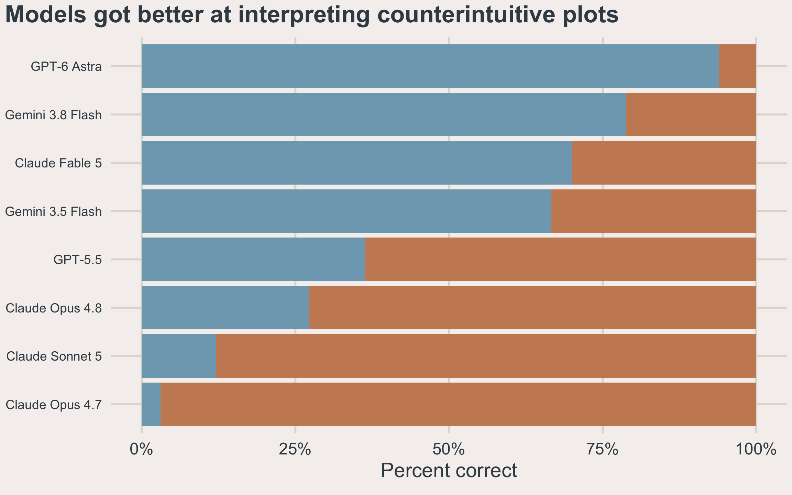
posit-dev.github.io/bluffbench
The models got better
A rising tide lifts all boats
Photo: Vidar Nordli-Mathisen, Unsplash
A rising tide lifts some of the boats
Photo: Vidar Nordli-Mathisen, Unsplash
But this doesn’t mean everything is solved
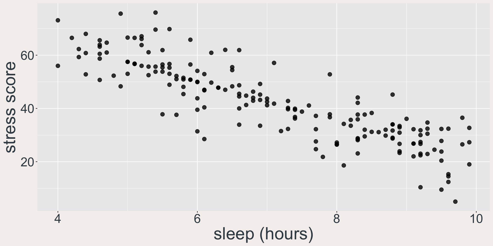
github.com/posit-dev/bluffbench2
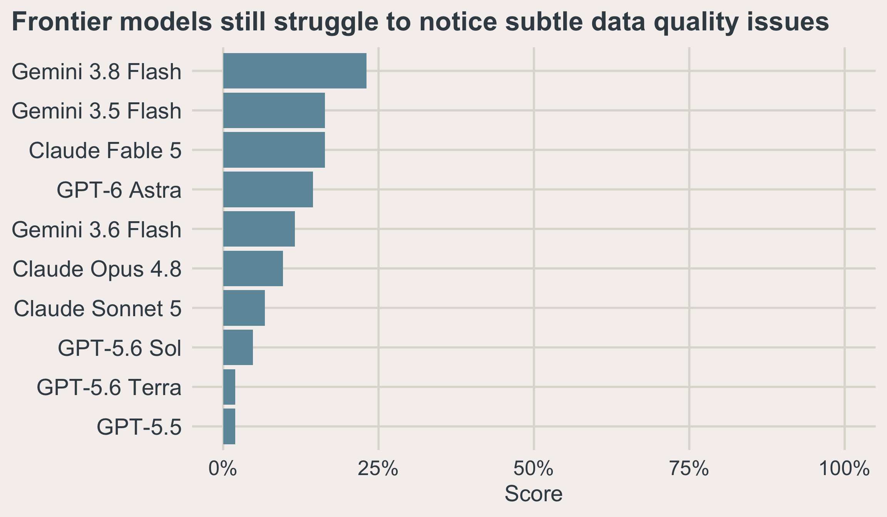
github.com/posit-dev/bluffbench2
LLMs are jagged
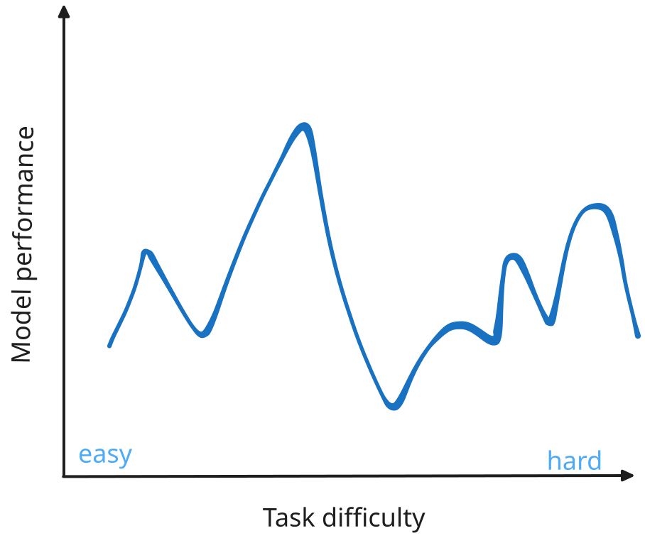
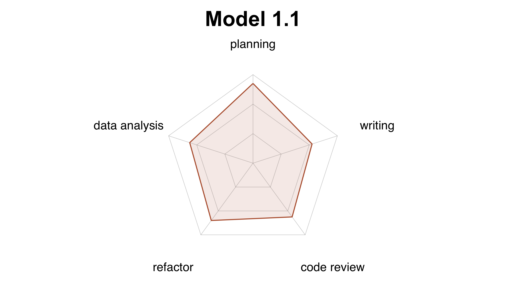
Data analysis depends on context that is not in the data.
How do we make data agents trustworthy?
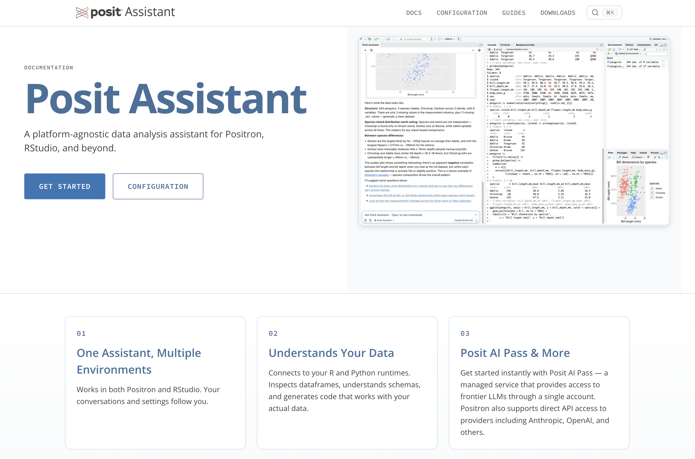
assistant.posit.co
Build the environment so that it’s easy to be right
The pit of success
Photo: Falling into the Pit of Success, Coding Horror
Code as the foundation
- LLMs are good at writing code
- Reproducible, transparent, auditable
Design the harness with correctness in mind
- Prompting: prioritize correctness, not progress.
- Tools that serve correctness: run code, see your session.
- Access to your files and environment to have enough context.
Posit Assistant demo

Performance improves when the environment makes it easy to be right
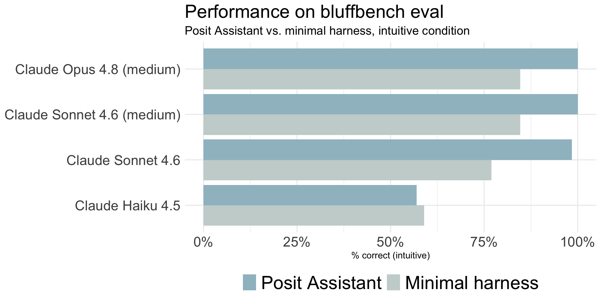
We can’t just rely on individual oversight.
Auto mode and human review
Auto mode and human review
The Simpsons
Auto mode and human review
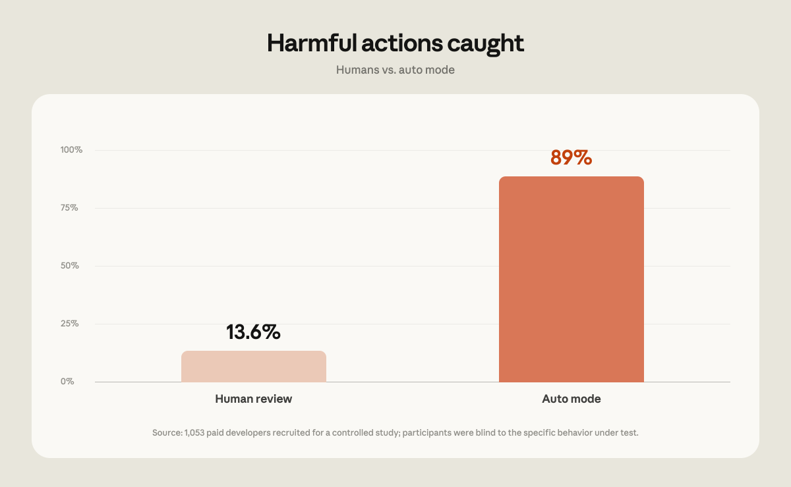
When should code shown to the user?
:::
When should code shown to the user?
Slowing down the EDA process
And what if the user is not a data scientist?
how is traffic trending for our site?
Analyzing site traffic
⌕
Searching workspaceweb analytics
✓
◫
Querying warehouseanalytics.pageviews
✓
∿
Calculating daily visitslast 90 days
✓
Daily visits are down 64% over the last 90 days.
Daily site visits−64%
could you find the site traffic chart we made a month ago?
Looking for prior analysis
⌕
Searching conversationssite traffic chart
✓
◫
Checking generated filestemporary workspace
✓
I couldn’t find that conversation or any saved analysis files. Do you want me to recreate that chart for the last 90 days?
yeah
Analyzing site traffic
⌕
Searching workspaceweb analytics
✓
◫
Querying warehouseanalytics.sessions
✓
∿
Calculating daily visitslast 90 days
✓
Daily visits increased 22% over the last 90 days.
Daily site visits+22%
Trusted code
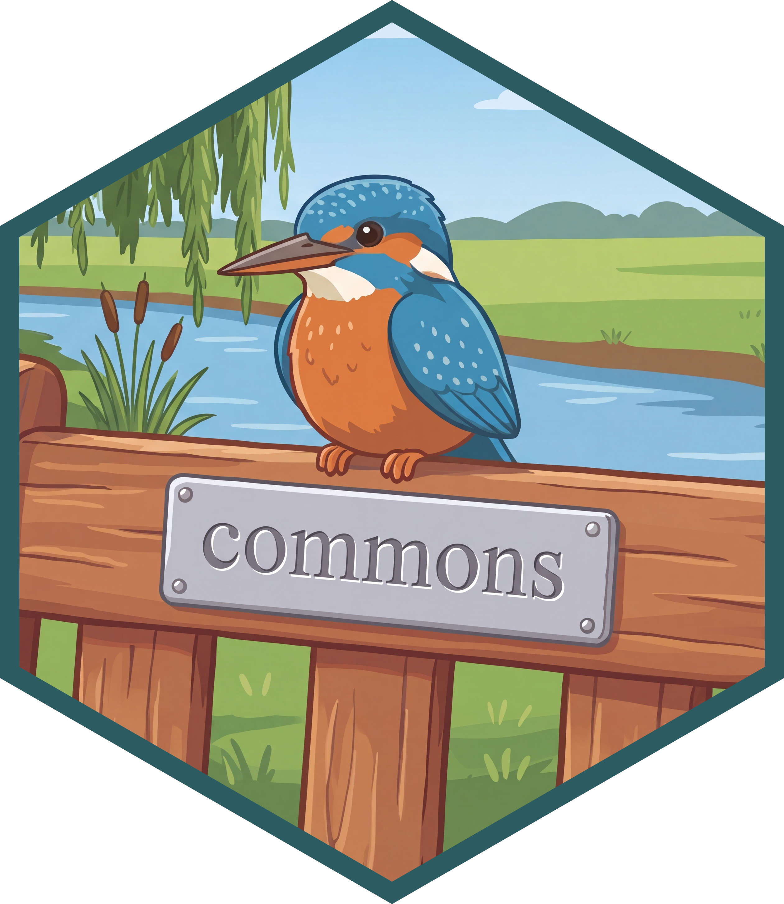
https://pos.it/commons
commons does 3 things
- Extract trusted calculations from existing artifacts into a data structure
- A harness to give the right context at the right time
- A feedback loop to push more queries up the trust ladder over time
Search trusted calculations
Find one↓
Don’t find one↓
Run trusted calculation
↓
Search context
↓
Write SQL/R/Python
Cite↓
Don’t cite↓
Demos
DevRel Agent
https://github.com/posit-dev/devrel-agent
Clinical trials agent
Build
You construct the agent by hooking it up to trusted code.
Deploy
Your colleagues use the agent deployed on Connect.
Improve
You review the agent’s behavior, adding trusted code to cover common use cases.
Build: the commons skill
- A coding agent with the commons skill walks you through building your agent
- It inspects your data, documentation, and trusted code before writing anything
- It pauses at each decision: scope, data sources, trust boundaries
Information layers
Give the agent more than access to data.
| Semantic layer | Context layer |
|---|---|
| Trusted calculations the agent can reuse | Background information that helps the agent reason about the data |
| R measures, data dictionary definitions, warehouse metrics | Documentation, definitions, conventions, and known limitations |
Build: the semantic layer
Trusted calculations: how an answer is computed.
- For example: enrollment counts by trial phase, using the team’s agreed definition
- Reuse vetted R functions as measures, defined inline or in R scripts
- Or use data dictionary definitions, Snowflake semantic views, and Databricks metric views
Build: the context layer
Organizational knowledge: what the data means and how to interpret it.
- For example: what “enrolled” means, reporting conventions, and known data limitations
- Supply text and Markdown documents; attach structured data dictionaries to data sources
- Relevant context is retrieved as needed; always-needed guidance goes in
instructions
Build
Putting the pieces together
Build: data sources from the warehouse
# Snowflake semantic view
warehouse <- data_source(
snowflake_con, tables = "ANALYTICS.TRIAL_ENROLLMENT"
)
# Or: Databricks metric view
warehouse <- data_source(
databricks_con, tables = "clinical.trial_enrollment_metrics"
)
agent <- commons(
ellmer::chat_anthropic(),
data_sources = list(warehouse = warehouse),
context_layer = context_layer(files = "context/protocol-conventions.md")
)- Use existing governed metrics as trusted calculations
- No separate
semantic_layer()call needed for these views
Deploy: your colleagues open the app
- Deploy like any other Shiny app:
rsconnect::deployApp() - Collaborators ask questions in natural language – no R required
- Access follows Connect permissions;
share_withgrants trajectory access
Governance
- Enforce access with warehouse permissions and per-viewer credentials
- Restrict provider-visible data, context, results, and measure source
- Protect full-conversation trajectory logs with access controls and retention
https://posit-dev.github.io/commons/r/articles/governance.html
Snowflake and Databricks integration
data_source()works with data frames, pins boards, and DBI connections- Snowflake semantic views and Databricks metric views are read as trusted measures
- Queries against them execute natively in the warehouse, under the connection’s permissions
- Answers built on them are marked trusted; custom code is marked differently
Improve: the trajectory reviewer
commons(log = TRUE)records conversation histories with OpenTelemetrytrajectory_read()reads trajectories from Connect or local tracestrajectory_review()opens a Shiny app to browse, flag, and annotate conversations
Reading trajectories back into R
# All trajectories you can access
trajectories <- trajectory_read()
# A recent window
recent <- trajectory_read(n = 20, from = "2026-07-01")
# Deployed content, by Connect GUID or URL
deployed <- trajectory_read("https://connect.example.com/content/abc123")
# Browse, flag, and annotate
trajectory_review(trajectories)commons, shinychat, querychat, and Posit Assistant
| What it is | |
|---|---|
| Posit Assistant | A coding and data science agent in RStudio, Positron, and the terminal |
| commons | An R/Python package for building trustworthy data agents with trusted calculations, context, and provenance |
| shinychat | Shiny UI components for chat interfaces |
| querychat | A chat interface for querying databases with SQL |
Revisiting the advice
| Earlier advice | Now |
|---|---|
| Use the best models | Use a model appropriate for the task. Understand what different models are good at, and where they tend to go wrong. |
| Have a human review the work | Design the system to be trustworthy; don’t rely on individual willpower for review. |
| Be (a little) afraid | There’s plenty to do: the task now is building these systems with normal engineering, data science, and IT practices. |
Weave trustworthiness into the system.
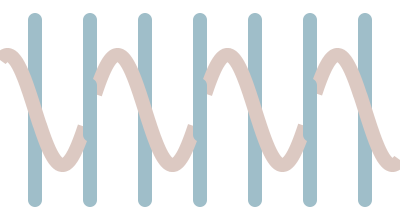